UNION
UNION TRUSTED CEREMONY SETUP MODEL
Union's Ceremony Setup stands as the most significant Groth16 trusted setup event to date, with over 5000 contributions securing the cryptographic future of cross-chain interoperability. This setup is a testament to the strength of decentralized collaboration and the trust our ecosystem embodies.